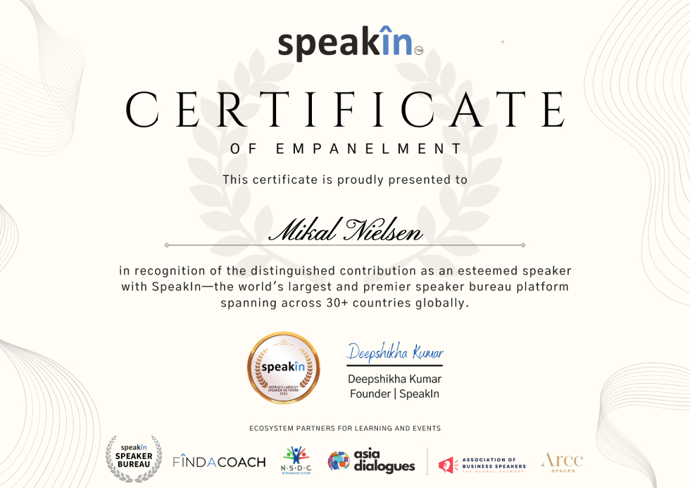

Not a keynote that leaves people buzzing for three days and back to normal by Thursday. Something that actually changes how they think.
Most motivational speakers leave you feeling great. Three days later, nothing has changed. Mikal is deliberately different. He does not do high-energy hype, feel-good platitudes, or generic leadership frameworks.
What he does is challenge the thinking that is holding your audience back — gently, rigorously, and sometimes uncomfortably. He creates what he calls a "revolution in thinking": genuine, lasting shifts in how people see themselves, their time, and their potential.
He is thought-provoking. He is edge-of-seat. And he always leaves an audience with ideas they cannot stop turning over in their minds.
Listed on Speakers New Zealand. Available throughout New Zealand and internationally.
Book Mikal to SpeakEach topic can be delivered as a keynote, a half-day workshop, or a full-day seminar. All are tailored to your audience and context.
The seminar that launched the book. Mikal dismantles the myths of time management and replaces them with the Life Mastery Framework — a completely different approach that produces completely different results.
The most valuable investment any leader can make is in their own mental fitness. This session explores what it means, why it matters, and what mentally fit leadership looks like in practice.
Most performance problems are not skill problems — they are thinking problems. Mikal walks audiences through the hidden beliefs that limit performance and shows how to change them from the inside out.
What does it mean to perform at your peak without sacrificing your health, your relationships, or your sanity? This session explores the integration of purpose, high performance, and genuine inner peace.
A rapid-fire, highly engaging presentation that takes seven commonly held beliefs about time and productivity — and dismantles each one with evidence, insight, and more than a little humour.
Stress is costing New Zealand businesses billions every year. More importantly, it is costing people their health and happiness. This session gives leaders and teams practical tools to change that — starting today.
Custom topics and tailored content available on request. Mikal works with event organisers to craft the right message for your audience.
Enquire About Speaking"Mikal delivered a tour de force presentation — spellbinding in content and delivery. By far the most impactful speaker we have brought in."Murray Douglas, CEO, Hawke's Bay Chamber of Commerce
"Absolutely outstanding. Our members were captivated. Mikal has a rare ability to make a room full of strangers feel like they are in an intimate conversation."Maree Mortimer, Rotorua PIA
"Our audience was engaged throughout — not a single phone out. Mikal gets people thinking in ways they did not expect to be thinking."Matt Blackwell, CEO
"By far the best seminar I have attended in 30 years. Honest, practical, and genuinely life-changing content."Terry Ryan, LJ Hooker
"The arrow-breaking story completely changed how I understand belief and what is possible. I still think about it."Fiona Jones
"Mikal has the rare ability to hold a room completely still. People were writing furiously and nodding deeply. He delivers insight that sticks."Event Organiser, Auckland Business Network
"We have had many speakers over the years. None have generated the conversation that Mikal did — the feedback forms were extraordinary."Conference Coordinator, Wellington

Mikal Nielsen is a listed speaker on Speakers New Zealand — the country's leading speaker bureau. He has spoken at conferences, chambers of commerce, business events, and leadership summits throughout New Zealand.
His background as a coach of 30+ years means his speaking is not just entertaining — it is grounded in deep knowledge of how people actually think and change.
Available for conferences, workshops, company events, and private functions throughout New Zealand and internationally.
Book a Speaking EnquiryGet in touch to discuss availability, topics, and logistics. Mikal works closely with event organisers to tailor the right content for your specific audience and context.
Make a Speaking Enquiry